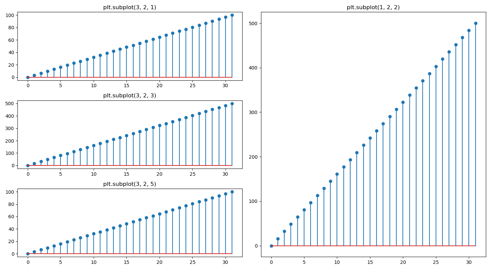
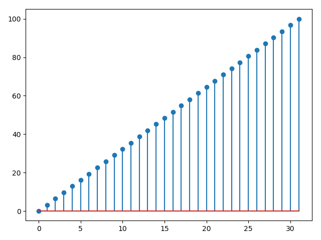
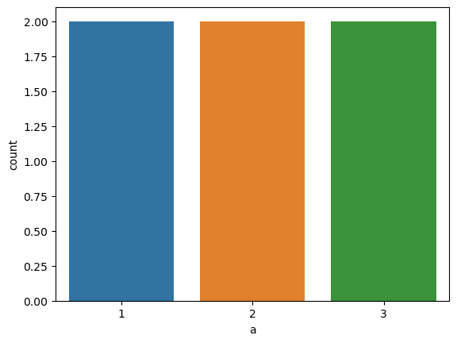

环境
1 | Python 3.8.0 |
一、内建函数
range 列表
创建一个整数列表
1 | range(10) # 从 0 开始到 10 |
list操作
判断某个值是否在list中
1 | test_list = list(xxxx) |
filter过滤器
删除list中空值和nan
1 | # python3中filter返回迭代器，需要使用list()转化回list |
map向量对应计算
- 两个同样长度的向量，每个元素按照function计算
1 | a = [1, 2, 3, 4] |
zip向量对应打包
- 两个同样长度的向量，每个元素打包到一起
1 | a = [1, 2, 3, 4] |
二、第三方module
1. pandas
1.1. csv文件读写
1) read_csv 读取csv文件
直接读取，第一行为表头
1 | test_df = pd.read_csv('test.csv') |
1 | Unnamed: 0 domain label |
将第一列作为索引读取
1 | test_df = pd.read_csv('test.csv', index_col=0) |
1 | domain label |
首行也是数据，自己加表头
1 | test_df = pd.read_csv('test1.csv', header=None, index_col=0, names=['domain']) |
1 | domain |
2) to_csv 写csv文件
默认写入，索引会写到第一列，列名会写到第一行
1 | test_df.to_csv('xxx.csv') |
索引从1开始写到第一列
1 | # 重建索引，防止其中顺序乱掉，重建的索引从0开始 |
去除索引，去除表头行写入
1 | test_df.to_csv('xxx.csv', index=False, header=False) |
只写其中一列，保留索引，去除表头
1 | test_df['label'].to_csv('xxx.csv', header=False) |
1.2. dataframe相关操作
- dataframe本质上多个相同索引的series组成的数据结构
- 一般df会改变数据的方法都有一个参数inplace，为True的时候改变原数据，为False的时候不改变原数据
1) 查看信息
1 | import pandas as pd |
2) 初始化
空dataframe初始化
1 | df = pd.DataFrame() |
dict转成dataframe
1 | import pandas as pd |
1 | [{'a': 1, 'b': True}, {'d': 1, 'b': True}] |
二维数组转dataframe，可以自定义列名，不定义就是从0开始的数字
1 | import pandas as pd |
1 | [[1, 2, 3], [4, 5]] |
一维数组转dataframe
1 | import pandas as pd |
1 | [1, 2, 3, 5, 6] |
3) 增
增加列
1 | # 插入一列，最右侧 |
合并两个表
1 | import pandas as pd |
1 | a bool |
增加行
合并两个dataframe
1 | import pandas as pd |
4) 改
(1) 打乱其中的行
- 使用sample方法进行打乱
1 | # frac是指抽取比例，为1就是全部抽取，抽取时是随机的，所以可以打乱数据 |
(2) 修改某个值
1 | # 查找到index行，column列改成5 |
(3) 修改列名
1 | # 修改列名 |
(4) 排序
1 | ## by为依据columns或index，需要指定axis，0是行排，1是列排，默认为0 |
(5) 只取几列
1 | # 取多列返回的是dataframe |
(6) 某一列修改类型
字符串转int
- 字符串的
0转数字0，不是\0转0
1 | data = pd.DataFrame({ |
1 | 0 0 |
其他
1 | #################### 删 ####################### |
- 遍历
1 | # 行遍历 |
- 数据对比
1 | # 比较两个数据 |
转换
1 | # list或者ndarray转成dataframe |
series相关操作
类似于python自带的dict类型
信息
1 | import pandas as pd |
list操作
1 | # 查 |
写入excel
不显示表头和索引
1 | # header=None 不显示表头，index=False 不显示索引 |
写入同一文件多个sheet
需要安装openpyxl，默认使用此module
1 | writer = pd.ExcelWriter("output.xlsx") |
出现非法字符问题，可以换用xlsxwriter作为写入
1 | writer = pd.ExcelWriter("output.xlsx", engine='xlsxwriter') |
2. numpy
2.1. 内置函数
(1) 数学函数汇总
1 | from numpy import * |
(2) argmax获取最大值的位置
1 | import numpy as np |
2.2. numpy数据存取
numpy有一个可以直接将numpy数组矩阵按照原来的格式储存和读取的函数
1 | import numpy as np |
这个方法可以直接将shape也存下来，不需要考虑格式、类型等，缺点是文件会有点大。
2.3. ndarray 矩阵
1) reshape 重置矩阵形状
从最外层开始重置矩阵形状，默认按行读取，-1代表未知数量，由numpy自动计算
1 | test_ndarray = test_ndarray.reshape(-1, 28, 28, 1) |
2.4. 随机数
- 随机种子
1 | import numpy as np |
2.5. linespace 列表
1 | import numpy as np |
2.6. array 数组
1) reshape 转成矩阵ndarray
1 | a = np.array([1, 2, 3, 4]) |
3. matplotlib
3.1. pyplot 画图
1) 新开一个页面 figure
1 | import matplotlib.pyplot as plt |
2) 一页多图 subplot
1 | import matplotlib.pyplot as plt |
效果图
3) 页面属性更改
1 | import matplotlib.pyplot as plt |
(1) 图例右上角展示
1 | # 不加这句不显示图例 |
(2) x轴斜着显示
1 | plt.xticks(x, rotation=45, ha='right') |
(3) x轴的数值只显示部分
1 | plt.plot(x, y) |
(4) y轴修改小数为百分比字符串
1 | plt.plot(x, y) |
(5) 设置x和y的范围
1 | plt.xlim(0, 1) |
4) stem 散点图
1 | # coding=utf-8 |
效果图
5) 展示图片
- 需要用到PIL库
1 | import matplotlib.pyplot as plt |
6) hist 直方图
bins: 分几组，越大直方图越细节label: 多标签的时候的图例，需要x传入数组，label和data的size一致- 需要调用legend才能显示图例，否则不会显示图例
1 | plt.hist(x=[train_data[train_data['label']==0]['shan'], train_data[train_data['label']==1]['shan']], bins=50, label=['0', '1']) |

7) 绘制折线图
1 | import matplotlib.pyplot as plt |

8) 双y轴画图
1 | import matplotlib.pyplot as plt |
9) 画直线或横线
1 | # 画竖线 |
踩坑记
1) 字体设置
- 默认的字体可能会导致中文显示不正常，需要设置字体
打印当前支持设置的字体
1 | # 打印当前支持设置的字体 |
打印当前默认字体
1 | import matplotlib.pyplot as plt |
1 | ['sans-serif'] |
设置字体
1 | plt.rcParams['font.sans-serif'] = ['WenQuanYi Micro Hei', 'Consolas'] |
4. seaborn
4.1. 画图统计向量中值的出现次数 countplot
x: 要统计数量的标签hue: 不同颜色表示的不同的标签，分别进行统计
1) dataframe
(1) 针对单标签画图
1 | import pandas as pd |
1 | a |
效果图
(2) 对两个标签进行统计画图
1 | sns.countplot(train_data, x='length', hue='label') |

2) list
1 | import seaborn as sns |

4.2. scatterplot 散点图
1) 根据不同的label画不同颜色的散点图
1 | # 生成颜色调色板 |

5. scipy
5.1. fftpack
1) fft 快速傅里叶变换
1 | from scipy.fftpack import fft |
6. pytorch
6.1. 安装
- 需要访问官网生成下载链接再下载安装
7. sklearn
7.1. 安装
1 | pip install scikit-learn |